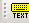

Contact
Princeton University Cataloging Documentation
Contact |
Princeton University Cataloging Documentation |
OCLC Return to OCLC main Customize toolbar Quick tools
|
Reposition toolbars
1. Move the cursor over the "grab bar" (shaded dots) of a toolbar. If a toolbar is at the top or bottom of the client window, the grab bar is on the left; for example,  If a toolbar is at the right or left, the grab bar is at the top. 2. When the cursor becomes a 4-pointed arrow, click and hold the grab bar, and then drag and drop the toolbar to a different position. |
| ©2008 Princeton University Last Modified 09/04/2008 |